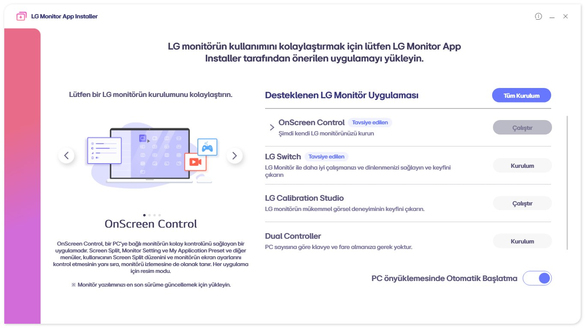
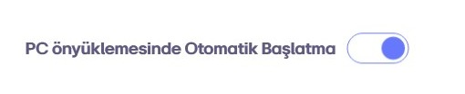
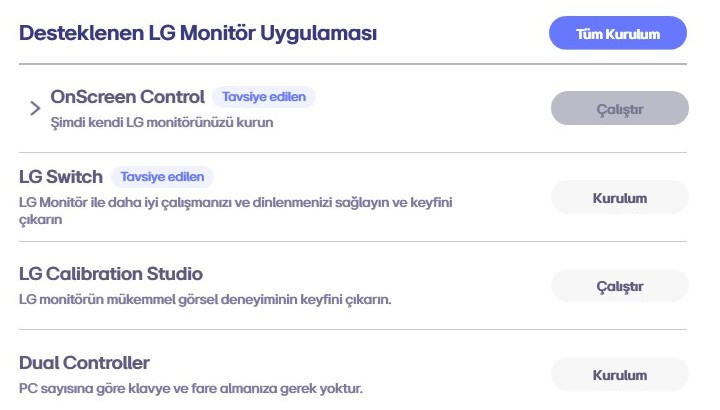

Consumer alert · LG
You plugged in a monitor. Windows installed adware
No prompt. No licence screen. Nothing in Programs and Features. The pictures below are LG's own.

No prompt. No licence screen. Nothing in Programs and Features. The pictures below are LG's own.



LG Electronics Inc. · 23.6 MB · on the Store since June 16, 2023
★★★★★ 1.0 from 431 ratings
Permissions Microsoft prints on the page: “Uses all system resources.” Then: access your internet connection.
LGElectronics.LGMonitorApp — the same one sitting on affected PCs, and the one the commands further down take off.
Figures read from Microsoft's own store listing, September 13, 2026


This is the icon you're hunting for. Pink download arrow, listed as LG Monitor App Installer.
LG Monitor, then McAfee. Either one you didn't install yourself means you were hit.perfmon /rel. Look for LGElectronics.LGMonitorApp.pnputil /enum-drivers. LG entries mean the machine is still armed even if the app is gone.Two steps. Do only the first and the next LG panel brings it back.
1. The app
Get-AppxPackage -AllUsers LGElectronics.LGMonitorApp | Remove-AppxPackage -AllUsers2. Both delivery packages
pnputil /enum-drivers
pnputil /delete-driver oemXX.inf /uninstallFind the two LG Electronics entries — lgmonitorappextension.inf and lgmonitorappsoftwarecomponent.inf — and delete each by the oemXX.inf name Windows gave it. Windows Home, and the caveats → · On a TV →
51 hardware IDs, read out of the LG package on our own machine. The models in the headlines aren't in this revision, so the real list is longer. Seen another one? Tell us.
Monitor model, Windows build, install date, app version, and the date of your first pop-up.
(Get-AppxPackage -AllUsers LGElectronics.LGMonitorApp).VersionMost useful right now: plug an affected panel into a Windows machine and tell us whether anything asked you first.
lgspyware.com@gmail.comWe build and support computers for a living. When hardware starts installing adware on our customers' machines without asking, it lands on our bench — so we pulled it apart and published what we found. The television work is Gamers Nexus's and we credit it as theirs. More about CEC ↗